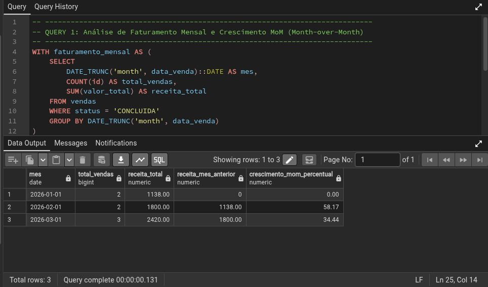
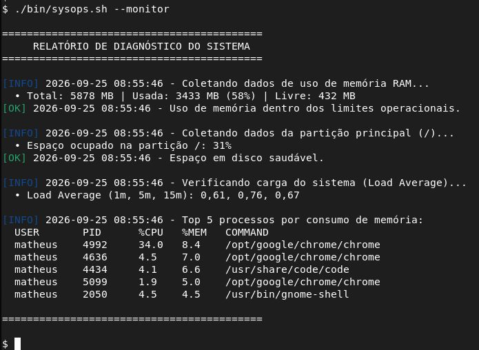

Matheus Linhares Teixeira
Analista de Sistemas | Banco de Dados | Automação & Segurança
Profissional de TI com experiência em sustentação de sistemas corporativos, auditoria de segurança, administração de bancos de dados relacionais e automação de processos. Foco em redução de falhas manuais e governança de dados.
Formação Acadêmica
Formação focada em análise de sistemas, banco de dados, engenharia de software, segurança da informação e redes de computadores.
Experiência Profissional
Administração de Banco de Dados (consultas SQL complexas e integridade das informações), segurança/auditoria sob o princípio de menor privilégio e automação de processos para eliminação de gargalos operacionais.
Mapeamento de processos operacionais do SUS, criação de relatórios automatizados para saúde da família e controle de insumos, além de condução de oficinas de letramento digital.
Desenvolvimento de planilhas automatizadas para cotação e análise de preços, além do suporte técnico e manutenção da rede interna de computadores.
Manutenção preventiva e corretiva de parque computacional e suporte contínuo a docentes e discentes em softwares de modelagem.
Habilidades Técnicas
Linguagens de Programação
Banco de Dados & Gestão
Ferramentas & Infraestrutura
Projetos & Atuações Técnicas

Modelagem de BD relacional e consultas SQL
Este projeto consiste na modelagem, implementação e análise de um banco de dados relacional para controle de vendas, clientes, catálogo de produtos e movimentação de estoque.
Ver Repositório ↗
Suíte modular de automação e administração de sistemas em Bash/Shell Script
Este projeto consiste em uma suíte modular em Shell Script para automação de tarefas de administração de sistemas (sysadmin), cobrindo desde diagnósticos de hardware e alertas até rotação automatizada de backups para Linux utilizando bash.
Ver Repositório ↗